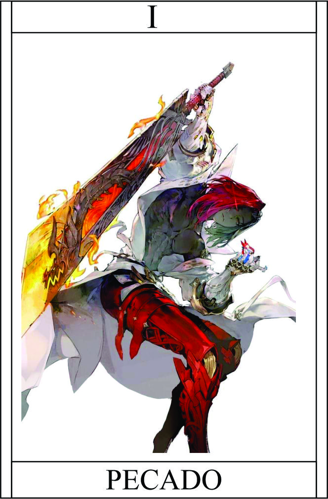

Pecado
Têndencia: Maligno
Passiva:
Aura dos Pecados:
Você emana uma aura carregada com os poderes dos sete pecados capitais. Essa habilidade especial concede a você um bônus passivo relacionado a cada pecado capital, amplificando suas habilidades e influenciando o comportamento daqueles ao seu redor.
Cada pecado capital confere um benefício distinto à sua aura, tornando-a uma força poderosa e sedutora:
- Luxúria:
- Sua presença exala um magnetismo irresistível, atraindo a atenção e a admiração dos outros. Isso pode ser usado para manipular ou persuadir aqueles que são suscetíveis a desejos carnais. | +1 Carisma e manipulação
- Gula:
- Seu apetite insaciável por poder e recursos é transmitido pela sua aura, permitindo que você absorva a energia vital de seus oponentes derrotados, fortalecendo-se a cada vitória. | Aumenta vida Permanentemente +1HP (somente epicos, limite 20)
- Avareza:
- Sua aura desperta o desejo por riquezas e tesouros, aumentando sua capacidade de encontrar itens valiosos ou influenciar aqueles que têm fraquezas relacionadas à ganância. | Ao derrotar um inimigo jogue teste de sorte
- Preguiça:
- Sua aura induz a uma sensação de relaxamento e lentidão nos outros, diminuindo sua velocidade de reação e tornando-os suscetíveis a ataques furtivos ou estratégias de longo prazo. | -1 nos testes
- Ira:
- A sua aura irradia uma energia incendiária, aumentando sua força e ferocidade em combate, mas também podendo desencadear impulsos violentos e instintos agressivos. | +2 ataques
- Inveja:
- Sua aura desperta o desejo de possuir as habilidades ou atributos de outros, permitindo que você copie temporariamente uma habilidade ou características de um oponente derrotado. Ou aumentado atributo de algo ou dimuindo.| teste raciocínio + protidão
- Soberba:
- Sua aura infla seu ego e autoconfiança, aumentando sua habilidade de persuasão e liderança, mas também tornando-o suscetível a subestimar seus oponentes. | +1 Labia e Manha
Legado 1 - Cobiça Ardente:
Ao utilizar a habilidade Cobiça Ardente, você desperta e amplifica o desejo de posse e ganância no alvo selecionado. Isso faz com que a pessoa fique obcecada pelo objeto de seu desejo, buscando-o de forma implacável e ignorando as consequências.
Essa habilidade pode ser usada para manipular ou distrair o alvo, canalizando sua ganância para um objetivo específico. Enquanto o alvo estiver consumido pela cobiça, ele ficará menos atento aos seus arredores e mais propenso a cometer erros ou se tornar vulnerável.
Cabe a você explorar a fraqueza da cobiça do alvo e utilizar essa oportunidade para avançar com suas estratégias ou ganhar uma vantagem durante o combate.
BÔNUS NO TESTE +2
Condição para ativar a habilidade:
É necessário que você esteja próximo a um alvo com um desejo ardente ou uma obsessão por algo que você possa usar em seu benefício.